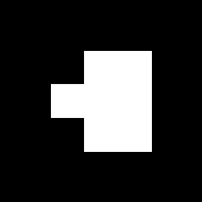
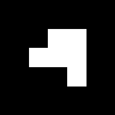

Cub AR — Cervell humà · Parts de l'encèfal i lòbuls cerebrals
Muntatge: 1) Imprimiu a mida real (100 %, sense «ajusta a la pàgina»). 2) Retalleu per la vora exterior
incloent-hi les pestanyes grises. 3) Doblegueu per totes les línies. 4) Enganxeu les pestanyes per dins.
Ús: escanegeu el QR per obrir el visor i apunteu la càmera a una de les quatre cares amb marcador:
cada una mostra una vista diferent del cervell en 3D.
(Aquest full s'imprimeix des del navegador: Ctrl+P → Desa com a PDF.)
Model 3D: Kristen Browne; Heidi Schlehlein. 2023. 3D Reference Organ for Brain, Male v1.3 .
https://doi.org/10.48539/HBM929.XKCL.339 — Human Reference Atlas, llicència CC BY 4.0 (adaptat).

Vista medialcos callós, tàlem i gir cingulat

Cervell sencerels lòbuls cerebrals

Lòbuls separatsvista explosionada animada
CUB AR
CERVELL HUMÀ
Parts de l'encèfal
i lòbuls cerebrals
4 vistes en 3D · marcadors barcode 3×3 núm. 0, 1, 2 i 3

Cerebel i troncmesencèfal, protuberància i bulb